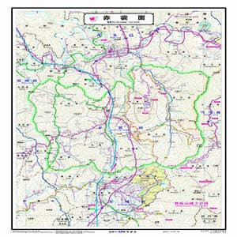

home > 무주소개
MUJU Introduce
무주소개
산자수려한 명승의 고장 무주

무주군은 남북으로 뻗은 소백산맥을 사이에 두고 삼한시대때 동편은 변진, 서편은 마한에 속해 있었고, 삼국시대는 변진의 무풍땅은 신라에 속하여 무산현이라 했으며, 마한의 주계땅은 백제에 속하여 적천현이라 했던 것을 통일 신라 이후에는 종전의 무산을 무풍으로, 적천을 단천으로 개칭했던 것인데 고려 건국과 함께 무풍의 지명은 그대로 두고 단천을 주계로 바꾸어 사용해 왔다. 그 후 조선 태종 14년 전국의 행정구역을개편할때 옛 신라땅의 무풍과 백제땅 주계를 합병, 하나의 행정구역으로 편제하면서 두 고을 이름의 첫자를 따 무주라는 새로운 지명을 붙여 사용하게 된 것이 오늘에 이르고 있다.


무주의 상징
군새 : 원앙
우리고장에 서식하는 텃새로서 저수지나 하천 등에서 자주 볼 수 있다. 암.수간에 사이가 좋아 "사랑"을 상징하는 새로 널리 알려져 있어 사랑으로 화합하는 군민정서와 부합된다.
군꽃 : 철쭉
낙엽 활엽 관목으로 임지 또는 능선의 나지에서 자라며 나무는 회갈색, 잎은 도란형으로 녹색이다. 꽃은 연한 홍색을 띠고 화관 윗부분에 적갈색 반점이 있다. 이 철쭉은 5월부터 계곡에서 피기 시작하여 덕유산 정상에 이르기까지 분포하여 6월까지 군락으로 장관을 이룬다.
군나무 : 주목
고상성 상목 침엽 교목이며 수간은 적색으로 윤기가 흐른다. 덕유산 주목은 옛부터 항목 또는 적목으로 불리며 주목이 군락하고 있는 봉우리는 향적봉이라는 명칭이 붙어있어 무주군의 지명과도 맥락을 같이 한다.
읍면 소개
-
안성면
-
부남면
-
설천면
-
무주읍
-
무풍면
-

적상면